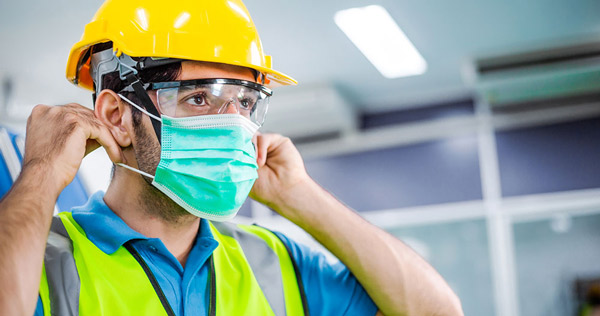

Como já estudado em outros conhecimentos, gerenciar a execução de projetos de design de interiores requer a habilidade profissional de comunicar-se de maneira assertiva, mediar conflitos e organizar insumos e equipes. Você é o responsável técnico pela obra. Consequentemente, prezar pela segurança e bem-estar físico de todos aqueles que passam pelo canteiro da sua reforma faz parte da sua atribuição profissional, ou seja, é você que deve estar atento à saúde e à segurança do trabalho.
A saúde e segurança do trabalho são um conjunto de práticas, políticas e regulamentações destinadas a garantir a proteção e o bem-estar físico, mental e social dos trabalhadores em um ambiente de trabalho. Essas práticas e ações visam prevenir acidentes e doenças, bem como promover um ambiente de trabalho mais seguro e saudável.
Os riscos encontrados nos locais de trabalho podem ser classificados como: ambientais, ergonômicos e de acidentes. Os locais de trabalho, devido à natureza das atividades realizadas e às características de organização, às relações interpessoais, à manipulação ou exposição a agentes físicos, químicos e biológicos, bem como às situações de deficiência ergonômica ou riscos de acidentes, podem comprometer a saúde e a segurança dos trabalhadores em curto, médio e longo prazo, resultando em lesões imediatas, doenças ou até mesmo morte.

Saúde e segurança do trabalho
Fonte: Doutor Fly (2021b)
Fotografia de um trabalhador, com equipamentos de proteção individual (EPIs), como capacete amarelo, óculos de proteção transparente, máscara e colete.
Como já mencionado, os riscos ambientais são representados por fatores físicos, químicos e biológicos. Confira:
Fatores ou agentes existentes no ambiente de trabalho que afetam a saúde do trabalhador, por exemplo, ruídos, radiações, vibrações, frio, calor, pressão e umidade.
Trabalho com substâncias que podem contaminar o ambiente profissional e provocar danos à integridade física e mental do trabalhador, por exemplo, fumos, névoas, neblinas, gases, vapores, substâncias ou compostos químicos.
Relacionados ao contato direto do trabalhador com vírus, fungos, bactérias e outros microrganismos.
Os riscos ergonômicos estão ligados à execução de tarefas e ao esforço físico. Seus riscos estão presentes em levantamento ou transporte manual de peso, mobiliário inadequado, posturas incorretas, ritmo excessivo de trabalho, jornadas de trabalho prolongadas, repetitividade e situações causadoras de estresse. Para reduzir os riscos ergonômicos, é preciso propor adaptações do ambiente de trabalho às capacidades e limitações dos trabalhadores, visando reduzir a fadiga, aumentar o conforto e prevenir lesões musculoesqueléticas.
Os riscos de acidentes podem surgir de várias situações, incluindo pisos pouco resistentes ou irregulares, uso de material ou matéria-prima fora de especificação, utilização sem proteção de máquinas e equipamentos, ferramentas impróprias ou defeituosas, iluminação excessiva ou insuficiente, instalações elétricas defeituosas e probabilidade de incêndio ou explosão. Além disso, o armazenamento inadequado de materiais, a presença de animais peçonhentos, a falta de sinalização adequada e a ausência de protocolos de segurança também contribuem significativamente para a ocorrência de acidentes. Outros fatores como falta de treinamento, supervisão inadequada e descumprimento das normas de segurança podem agravar ainda mais esses riscos, colocando em perigo a saúde e a vida dos trabalhadores.
Além dos riscos, existem aspectos essenciais que auxiliam não somente a identificar a causa, mas prevenir acidentes e doenças decorrentes do trabalho.
A prevenção acontece com a implementação de medidas que evitam acidentes e incidentes no local de trabalho, como o treinamento adequado, uso de equipamentos de proteção individual (EPIs) e manutenção de máquinas e equipamentos.
O controle de risco atua na identificação, na avaliação e no controle de riscos que possam afetar a saúde e a segurança dos trabalhadores nos aspectos físicos, químicos, biológicos, ergonômicos e psicossociais.
A conformidade legal garante que as empresas cumpram todas as leis e regulamentações relacionadas à saúde e segurança do trabalho.
Fornecer treinamentos regulares e educação contínua aos trabalhadores sobre as práticas seguras e saudáveis é fundamental para prevenir acidentes e incidentes no ambiente de trabalho.
O monitoramento e a avaliação contínuos para analisar a eficácia das práticas de saúde e segurança do trabalho é importante para realizar ajustes quando necessário.
Desenvolver um ambiente de trabalho mais seguro e saudável não só protege os trabalhadores, mas também pode aumentar a produtividade, reduzir custos com afastamentos e melhorar o bem-estar geral dos funcionários.
Por diversas razões é fundamental que o profissional de design de interiores esteja atento aos fatores de saúde e segurança do trabalho, mesmo atuando em uma empresa terceirizada. Primeiramente, existe a responsabilidade legal e ética de criar ambientes que não apenas atendam aos requisitos estéticos e funcionais, mas que também sejam seguros para os usuários.
Ao considerar fatores de saúde e segurança, o designer pode ajudar a prevenir acidentes e doenças ocupacionais. Isso inclui a escolha de materiais seguros, a criação de leiautes ergonômicos e a consideração de iluminação adequada. Ambientes bem projetados reduzem o risco de quedas, lesões e outros acidentes, protegendo tanto os trabalhadores quanto os visitantes.
Além disso, ambientes seguros e saudáveis contribuem para o bem-estar dos ocupantes, o que pode levar a uma maior satisfação e produtividade. Projetos que não atendem às normas de saúde e segurança podem ser rejeitados por autoridades reguladoras, resultando em atrasos e custos adicionais. Manter-se atualizado com as normas garante que o projeto esteja em conformidade e evite problemas legais.
Demonstrar um compromisso com a saúde e segurança reforça a credibilidade e a reputação do designer de interiores. Clientes e parceiros valorizam profissionais que priorizam a segurança em seus projetos. Além disso, projetos que consideram a saúde e segurança tendem a ser mais sustentáveis, pois promovem o uso de materiais não tóxicos, melhoram a qualidade do ar interior e consideram o bem-estar a longo prazo dos ocupantes.
Em muitos projetos, o designer de interiores trabalha em conjunto com engenheiros, arquitetos e outros profissionais. Estar ciente dos aspectos de saúde e segurança facilita a comunicação e a colaboração, garantindo que todos os aspectos do projeto sejam integrados de maneira harmoniosa e segura. Portanto, mesmo sendo de uma empresa terceirizada, o profissional de design de interiores deve sempre considerar os fatores de saúde e segurança para garantir que os espaços projetados sejam seguros, funcionais e estejam em conformidade com as normas aplicáveis.
As principais ações para a prevenção de acidentes no ambiente de trabalho incluem treinamento dos trabalhadores, planejamento e organização da obra, uso de equipamentos de segurança e inspeções regulares. Implementar essas ações de forma integrada e contínua é essencial para criar um ambiente de trabalho seguro e reduzir significativamente a ocorrência de acidentes. A promoção de uma cultura de segurança, na qual todos os trabalhadores estão envolvidos e comprometidos com a prevenção de acidentes, é um objetivo fundamental para qualquer organização.
Que tal conhecer mais detalhes sobre cada uma dessas ações?
Garantir aos trabalhadores treinamento adequado e contínuo sobre segurança no trabalho inclui a compreensão dos procedimentos de segurança, o uso correto de EPIs, a identificação de riscos e a resposta adequada a emergências. Trabalhadores bem treinados estão mais preparados para evitar acidentes e lidar com situações de risco.
Treinamento em saúde e segurança do trabalho
Fonte: SAOC (2022)
Fotografia de uma sala de aula com diversas mesas retangulares. Na mesa da frente estão sentados dois trabalhadores com capacetes de obra amarelos sobre a mesa e atentos à explicação da treinadora, que está de pé, com o capacete em mãos.
É preciso desenvolver um plano de segurança que identifique riscos potenciais e estabeleça medidas preventivas. A organização do local de trabalho deve incluir a demarcação clara de áreas para armazenamento de materiais, circulação de pessoas e máquinas, além da implementação de um cronograma realista. A coordenação entre todos os envolvidos no projeto é vital para garantir que todos estejam cientes dos riscos e das medidas de segurança.
Planejamento e organização
Fonte: Movimak (2018)
Fotografia de um corredor em um grande depósito. A imagem está centralizada no corredor e, em ambos os lados, estão prateleiras de armazenamentos de quatro andares. No chão, em frente às prateleiras, existem marcações de linhas amarelas demarcando a passagem e as limitações de circulações do corredor.
O uso de equipamentos de proteção coletiva (EPCs) e de EPIs é essencial para proteger os trabalhadores. Os EPIs, como capacetes, luvas, óculos de proteção, botas e cintos de segurança, devem ser fornecidos e utilizados de acordo com as necessidades específicas de cada tarefa. Além disso, as máquinas e os equipamentos devem estar equipados com dispositivos de segurança, como proteções em partes móveis e sistemas de desligamento automático, a fim de minimizar o risco de acidentes durante o uso.
EPIs
Fonte: Doutor Fly (2021a)
Fotografia de diversos EPIs sobre uma superfície. Entre os equipamentos estão botas, óculos de proteção transparente, óculos de proteção amarelo, máscara de respiração, protetor auricular, luvas e capacete de proteção amarelo.
Realizar inspeções regulares é uma tarefa fundamental para identificar e corrigir potenciais riscos antes que eles resultem em acidentes. As inspeções devem ser conduzidas por profissionais qualificados e abranger todos os aspectos do local de trabalho, incluindo o estado das máquinas e dos equipamentos, a condição das instalações elétricas, a organização do espaço e o uso adequado dos EPIs. Além disso, as inspeções devem verificar a conformidade da obra com as normas de segurança e identificar áreas nas quais melhorias podem ser feitas.
Inspeção regular
Fonte: Zambelli (2024)
Fotografia de uma trabalhadora vestindo EPIs, de pé, em uma fábrica. A mulher segura um notebook e está observando algo à frente, realizando a inspeção do local de trabalho.
Os EPIs são dispositivos ou produtos utilizados pelo trabalhador para protegê-lo de riscos capazes de ameaçar a sua segurança e saúde durante a realização de suas atividades laborais. Na área da construção civil, os trabalhadores estão expostos a diversos riscos no canteiro de obras, por isso, a utilização correta dos EPIs na construção civil é uma medida essencial para a proteção dos trabalhadores. Além de cumprir as regulamentações de segurança, eles promovem um ambiente de trabalho mais seguro e eficiente, contribuindo para a redução de acidentes e doenças ocupacionais no setor.
Os EPIs servem como uma barreira de proteção contra riscos ocupacionais, como lesões físicas, químicas, biológicas e ergonômicas, além de prevenirem acidentes graves, reduzirem a incidência de doenças ocupacionais e promoverem um ambiente de trabalho mais seguro.